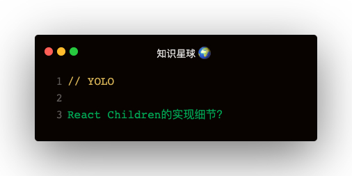

React.Children.map的主要功能
- 三个参数：children，func，context
- 主要功能：使用上下文context对每个children执行func
- 返回结果的特殊处理，返回结果是数组，拍平
- 如何拍平？遍历每一项执行mapIntoWithKeyPrefixInterval
两个问题
- React.Children.map的第一个参数children允许哪几种类型？
- 为什么执行完回调的结果mappedChild，判断是还要进行mapIntoWithKeyPrefixInternal
解答
React.Children.map 就是ReacChildren.js中的mapChildren函数，主要流程如下：
mapChildren函数：
1. 定义result，const result = []
2. mapIntoKeyPrefixInternal(children, result, null, func, context)
3. 返回result
mapIntoKeyPrefixInternal函数：
1. 生成context：getPooledTraverseContext
{
result: [],
keyprefix: '',
func: func,
context: null,
count: 0
}
2. traverseAllChildrenImpl 遍历children执行func
3. 释放context：releaseTraverseContext
3.1 把context下的属性都置为null，count置为0
3.2 把context放入traverseContextPool，上下文池size为10
traverseAllChildrenImpl函数：
1. children为string，number时：表示是文本节点
2. children为object类型，children.$$typeof为REACT_ELEMENT_TYPE，REACT_PORTAL_TYPE，说明是可以渲染的节点
3. 以上四种情况证明children是可渲染的节点，直接执行mapSingleChildIntoContext
4. children是数组，遍历children，对每个元素来一次traverseAllChildrenImpl
5. children是可迭代数据，调用Symbol.iterator，对每个元素来一次traverseAllChildrenImpl
6. children是object，放弃，非法数据警告
mapSingleChildIntoContext函数：
1. 获取数据：const { result, keyPrefix, func, context } = bookKeeping
2. 执行回调：let mappedChild = func.call(context, child, bookKeeping.count++)
3. 判断结果mappedChild是数组，从mapIntoKeyPrefixInternal对每一项再走一遍
4. mappedChild不是数组，result.push(mappedChild)
为什么在执行完func回调拿到mappedChild，还要对其处理
因为React需要对其进行拍平，比如下面这种场景：
React.Children.map(this.props.children, child => [child, child])
这种情况如果Children是[div1, div2]，map之后的结果为[div1, div1, div2, div2]
性能优化点
const POOL_SIZE = 10;
const traverseContextPool = [];
function getPooledTraverseContext(
mapResult,
keyPrefix,
mapFunction,
mapContext,
) {
if (traverseContextPool.length) {
const traverseContext = traverseContextPool.pop();
traverseContext.result = mapResult;
traverseContext.keyPrefix = keyPrefix;
traverseContext.func = mapFunction;
traverseContext.context = mapContext;
traverseContext.count = 0;
return traverseContext;
} else {
return {
result: mapResult,
keyPrefix: keyPrefix,
func: mapFunction,
context: mapContext,
count: 0,
};
}
}
function releaseTraverseContext(traverseContext) {
traverseContext.result = null;
traverseContext.keyPrefix = null;
traverseContext.func = null;
traverseContext.context = null;
traverseContext.count = 0;
if (traverseContextPool.length < POOL_SIZE) {
traverseContextPool.push(traverseContext);
}
}
搞一个traverseContextPool池子，存储traverseContext对象，就不用频繁创建一个有很多属性的对象，很消耗性能